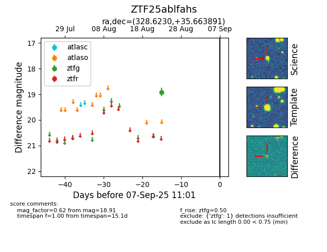

Target ZTF25ablfahs at 2025-08-26 11:15, see:
FINK: fink-portal.org/ZTF25ablfahs
Lasair: lasair-ztf.lsst.ac.uk/objects/ZTF25ablfahs
ALeRCE: alerce.online/object/ZTF25ablfahs
alt names
ZTF25ablfahs (ztf,fink)
coordinates:
equatorial (ra, dec) = (328.6230,+35.66389)
galactic (l, b) = (87.0782,-14.60800)
photometry
last ztfg=18.91
1 ztfg detections
